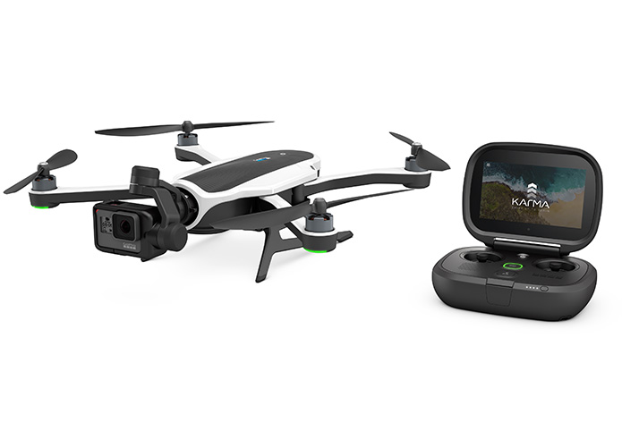
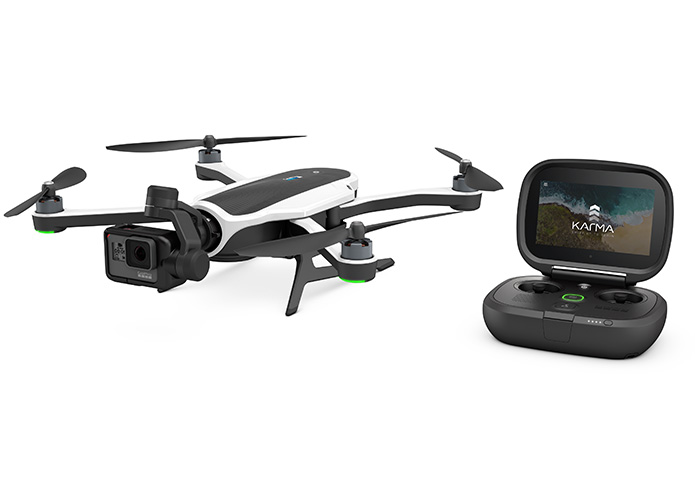

The karma like the MAVIC is a foldable drone, although the folded state is larger than the MAVIC it is still very easy to carry. The GOPRO KARMA comes with its own bag a detachable GOPRO hero 5 and a unique stabilising grib. The drone gimbal can be detached and inserted into the stabiliser grib creating a handheld electronic gimbal awesome! The drone con hover in the exact place due to its altitude hold and GPS postioning.
 
